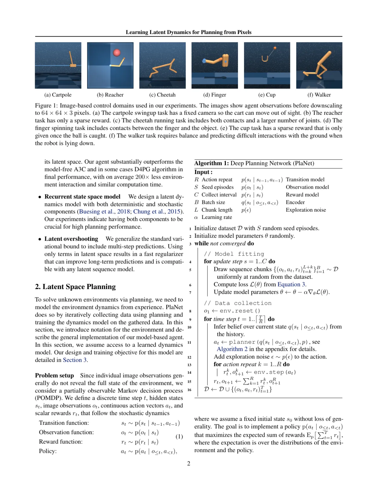
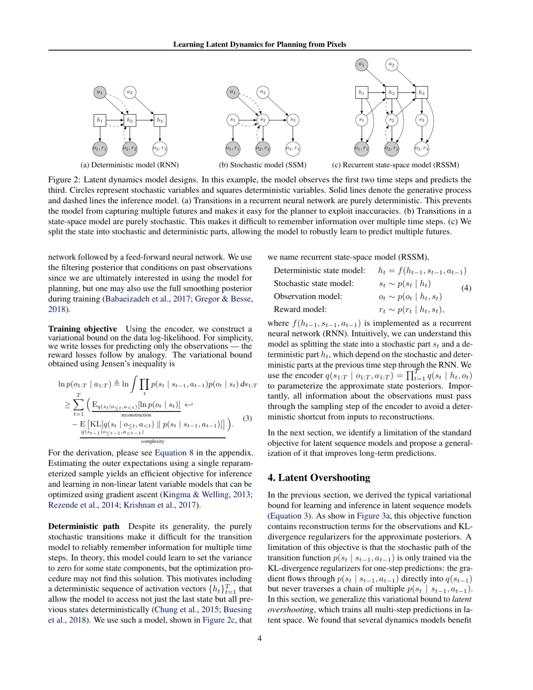
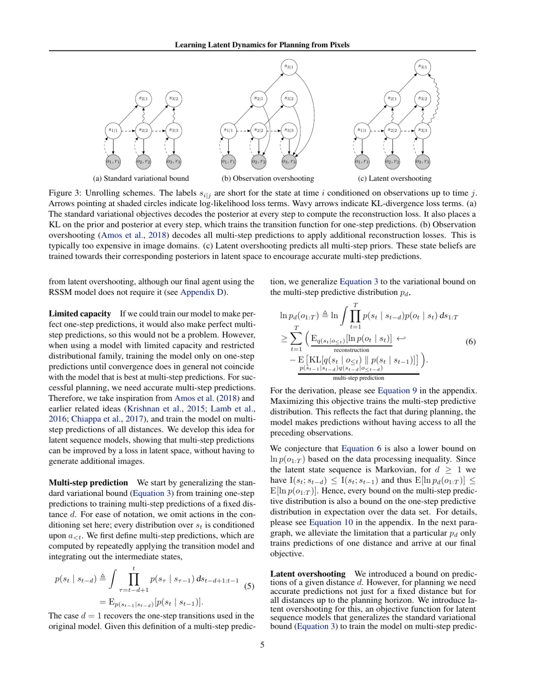
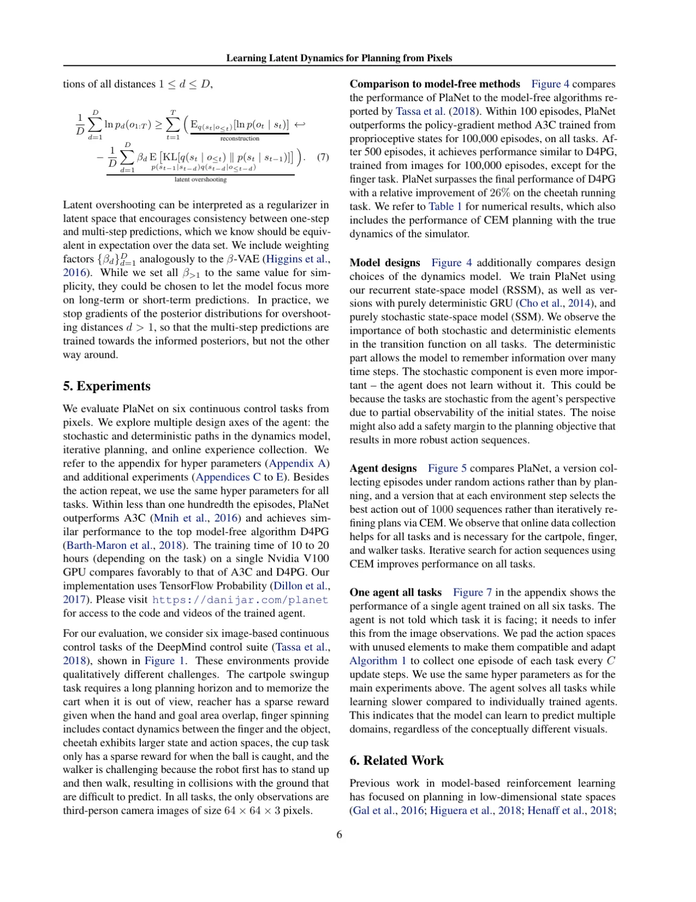
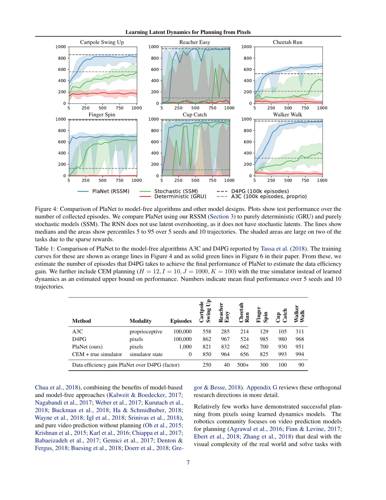
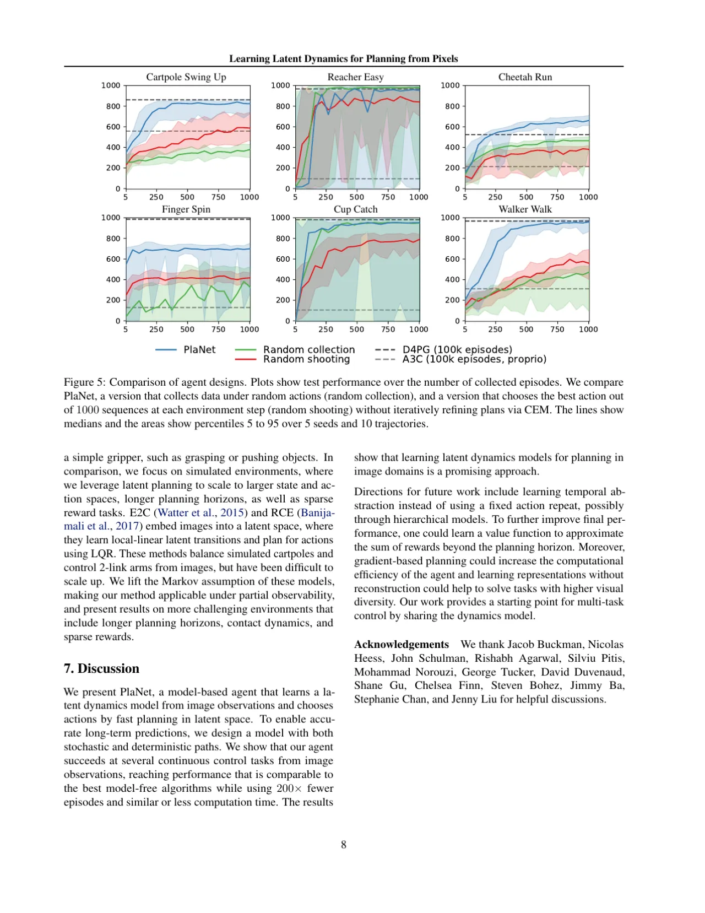

PlaNet（Deep Planning Network）是一种纯基于模型的 agent，仅从像素观测中学习环境动态，并在学习到的隐状态空间内通过在线规划（CEM）选取动作。它无需价值网络或策略网络，却在多个连续控制基准上以比 model-free 方法少得多的环境交互次数达到相近或更好的最终性能。
强化学习在控制任务上取得了令人瞩目的成果，但绝大多数成功案例都依赖 model-free 方法——需要与环境进行数以百万计的交互。当传感器只能提供高维图像时，样本效率问题更为严峻。利用学习到的动态模型（dynamics model）进行规划，理论上可以大幅减少所需交互，但长期以来难以在复杂的图像域中可靠地实现。
"Planning using learned models offers several benefits over model-free reinforcement learning. First, model-based planning can be more data efficient because it leverages a richer training signal and does not rely on propagating rewards through Bellman backups."

PlaNet 的核心是 Recurrent State Space Model（RSSM）——一个同时包含确定性（deterministic）和随机性（stochastic）转移分量的隐状态空间模型。通过变分自编码器（VAE）框架从像素中学习该模型，再利用 Cross-Entropy Method（CEM）在隐空间中规划动作序列，无需任何策略网络。

RSSM 将隐状态 zt 拆分为两部分：
观测模型（decoder）和奖励模型（reward model）均以 (ht, st) 为输入进行预测。训练使用变分下界（ELBO），同时最大化图像重建对数似然和奖励预测准确性，并对 KL 散度施加正则化。
标准 VAE 目标（ELBO）只对单步转移进行变分推断，导致模型仅在一步预测上做优化，而规划需要准确的多步预测。论文提出 latent overshooting：在所有预测距离 d = 1, 2, …, D 上都附加 KL 散度惩罚项，迫使先验和后验在多个时间步上保持一致：

Latent overshooting 的核心思路："If we could train our model to make perfect one-step predictions, it would also make perfect multi-step predictions, so this would not be a problem. However, when using a model with limited capacity and restricted distributional family, training the model only on one-step predictions until convergence does in general not coincide with the model that is best at multi-step predictions."
测试时，agent 利用学习到的 RSSM 进行 MPC（Model Predictive Control）：在隐空间中以 CEM 采样并评估 H 步候选动作序列（默认 H=12，迭代 10 次，每次 1000 个候选），选取期望累积奖励最高的序列执行第一步动作，再重新规划。整个过程不需要任何策略网络或价值函数——模型是唯一"知识"来源。
在 DeepMind Control Suite 的 6 个连续控制任务上，对比 A3C（模型无关、像素输入）、D4PG（模型无关、像素输入，proprioceptive 版本作为上界）、带真实动态的 CEM（oracle），以及纯随机随机策略。所有 pixel-based 方法使用相同 64×64 三阶段下采样图像。指标为最终性能的 median ± IQR（5 seeds × 10 trajectories）。


| 方法 | 观测模态 | Episodes | 总 median 奖励 |
|---|---|---|---|
| A3C (pixels) | pixels | 100,000 | 214 |
| D4PG (pixels) | pixels | 100,000 | 462 |
| D4PG (proprioceptive) | proprioceptive | 100,000 | 961 |
| PlaNet / RSSM（本文） | pixels | 1,000 | 862 |
| CEM + 真实动态（oracle） | state | — | 941 |

论文通过控制变量验证了各设计选择的必要性：
CEM 规划在每个环境步骤都需要在隐空间中评估大量候选序列（默认 1000 × 10 次迭代 × 12 步），随着规划视野 H 增加，计算量线性增长。论文指出"对于实际实时控制问题这仍是一个挑战"。
论文明确表示该方法"在视觉复杂度很高或者部分可观测性严重时可能面临困难"。实验中的 64×64 像素任务视觉相对简单；在更真实的图像域中模型容量可能成为瓶颈。
PlaNet 的 CEM 规划天然适配连续动作空间，对高维离散动作空间或复杂操控任务（如机械臂抓取）的扩展性尚未验证。实验中的六个任务动作维度均较低（1–6维）。
基于模型规划的固有问题：在分布外（out-of-distribution）的状态区域，learned dynamics 的预测误差会随规划步数累积，导致规划效果退化。论文通过缩短 MPC 重规划间隔来缓解，但未根本解决。